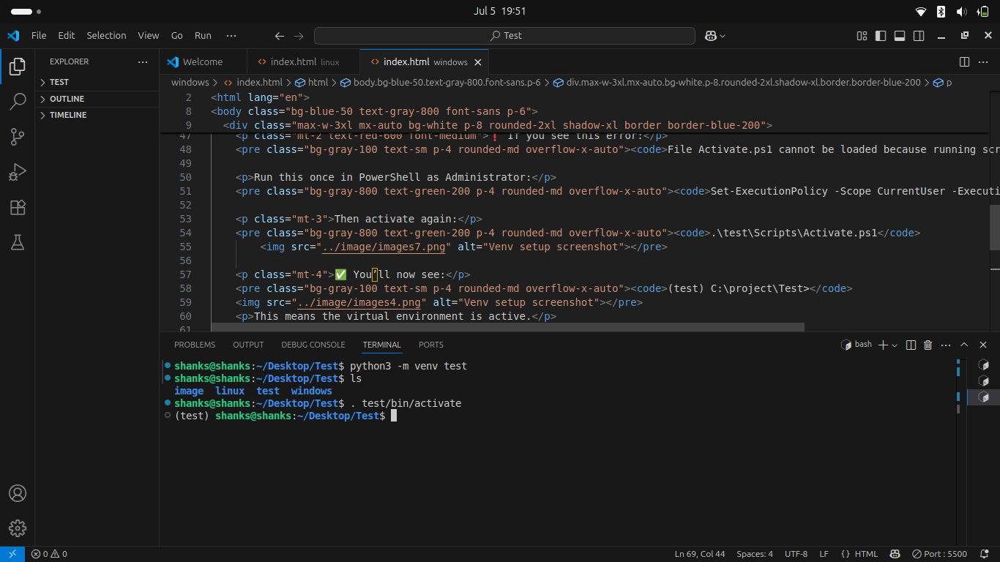

Setting Up venv on Linux (Ubuntu / Xubuntu / Debian)
Step 1: Install Python (if not installed)
sudo apt update
sudo apt install python3 python3-venv python3-pip
Step 2: Create a Virtual Environment
python3 -m venv venv_name
# Example:
python3 -m venv test
# This will create a folder named 'test' in your project directory.

Step 3: Activate the Virtual Environment
# Use one of the following:
source test/bin/activate
. test/bin/activate
# You'll see (test) before your terminal prompt — it means the environment is active.

Step 4: Install a Module (e.g., requests)
To install any Python module in the virtual environment, use:
pip install module_nameExample:
pip install requestsStep 5: Deactivate
To exit the virtual environment:
deactivate